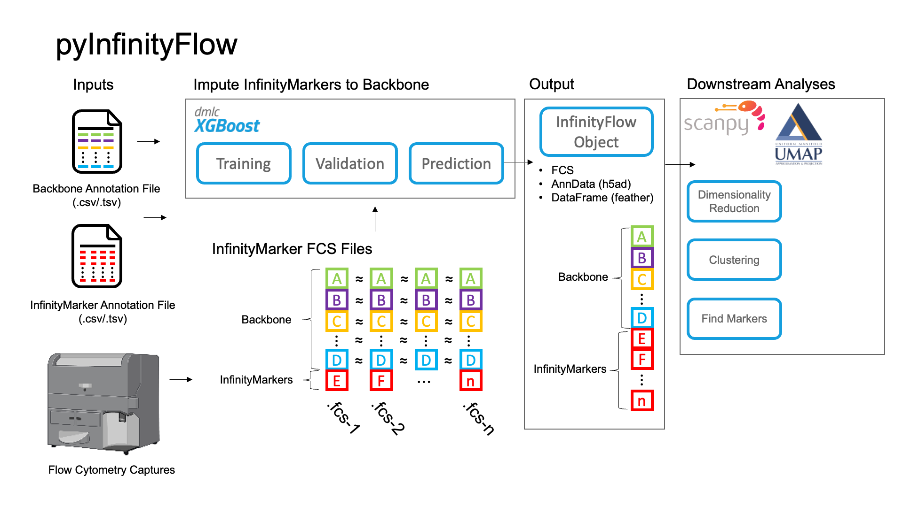

pyInfinityFlow¶
pyInfinityFlow is a Python package that enables imputation of hundreds of features from Flow Cytometry using XGBoost regression. It is an adaptation of the original implementation in R 1 with the goal of optimizing the workflow for large datasets by increasing the speed and memory efficiency of the analysis pipeline.
The package includes tools to read and write FCS files, following the FCS3.1 file standard
Downstream analyses
Graphical Summary¶

Recommended Installation¶
Quickstart¶
Selected References¶
Contents: